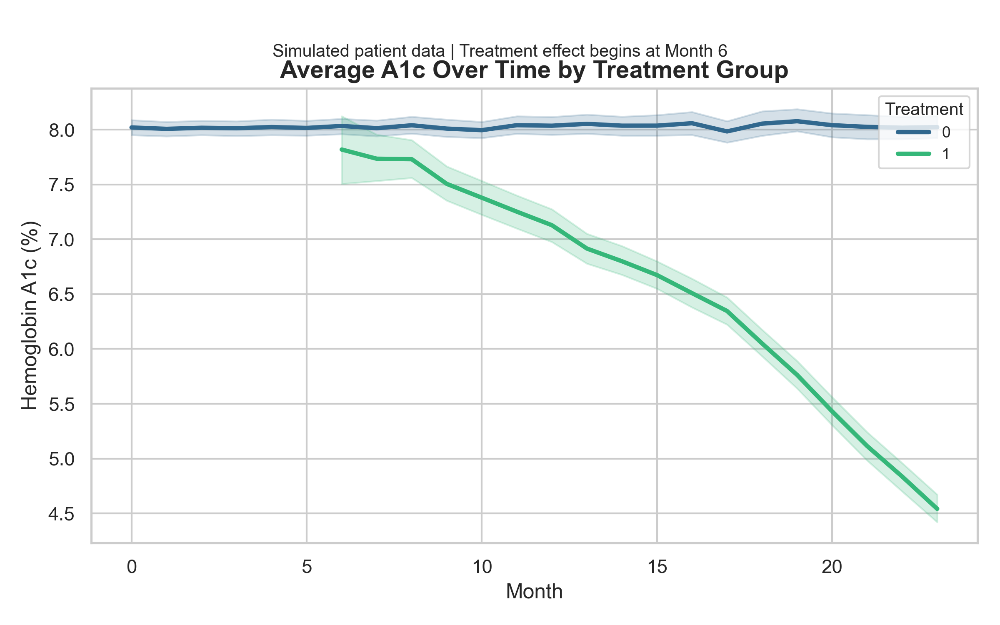

Simulated Causal Impact of a Diabetes Intervention
This project applies fixed effects and staggered Difference-in-Differences (DiD) modeling to a synthetic longitudinal dataset of 7,500 patients to evaluate the impact of a simulated diabetes intervention.
- Controlled for individual heterogeneity and calendar trends using fixed effects
- Used event study design to estimate treatment effects over time
- Found a statistically significant reduction in A1c (–1.13 units, 95% CI: –1.19 to –1.07)
- Pre-trend checks support validity; model explains 31% of within-patient outcome variation
Designed to demonstrate applied causal inference and time-series modeling for product, experimentation, or health tech use cases. See the full repository for code and methods.
Visual Summaries
Average A1c Trajectory by Treatment Group

Event Study Estimates (ATT)